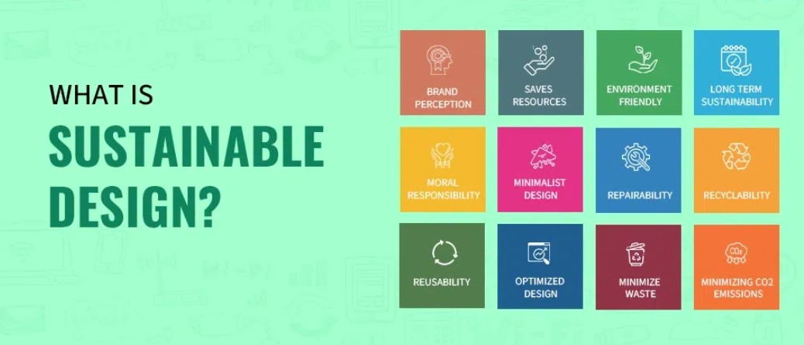

Sustainable web design means creating websites that are fast, accessible, lightweight, and useful for users.
The goal is to reduce page size, use fewer resources, and make websites easier to use on all devices.
A sustainable website should be simple, clean, responsive, and accessible.
